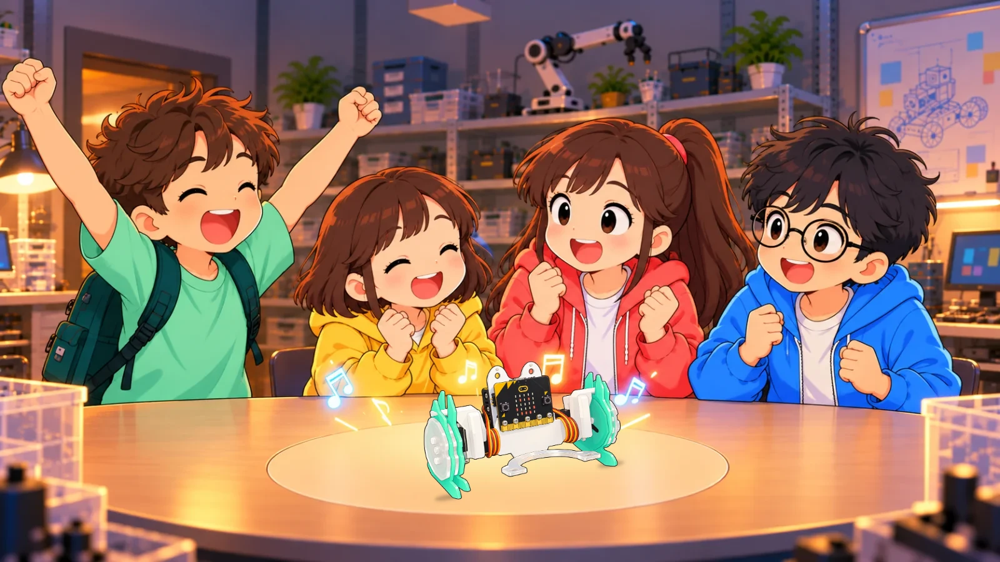

이야기로 배우는 로봇과 AI비트런과 함께하는
비트런과 함께하는
연구소 탈출 작전
갑자기 잠겨 버린 연구소의 문!
네 명의 친구, 그리고 우리의 단짝 비트런과
코딩으로 탈출의 실마리를 찾아요.
이야기 속 미션직접 만드는 블록 코딩

우리의 탈출 이야기
오늘은 어떤 미션에 도전할까요?
1차시부터 차근차근 · 오늘 배울 차시를 골라요
전체 8차시기초부터 시작하고, 더 도전하고 싶으면 추가 미션!
선생님과 함께 준비해요
이야기를 따라, 내 속도로 한 걸음씩.
처음 코딩하는 친구도 기초 실습부터 시작할 수 있어요.
- 01
차시를 고르고 입장해요
학생은 이름을 넣고 시작해요.
선생님은 각 차시의 교사 화면에서 수업을 준비해요. - 02
이야기와 기초 미션부터
친구들과 단서를 찾고 코드를 만들어요. 익숙해지면 같은 실습의 추가 미션에 도전해요.
- 03
실제 비트런으로 확인해요
코딩과 로봇 연결은 컴퓨터에서 선생님과 함께 해요. 학습 기록은 이 브라우저에 저장돼요.